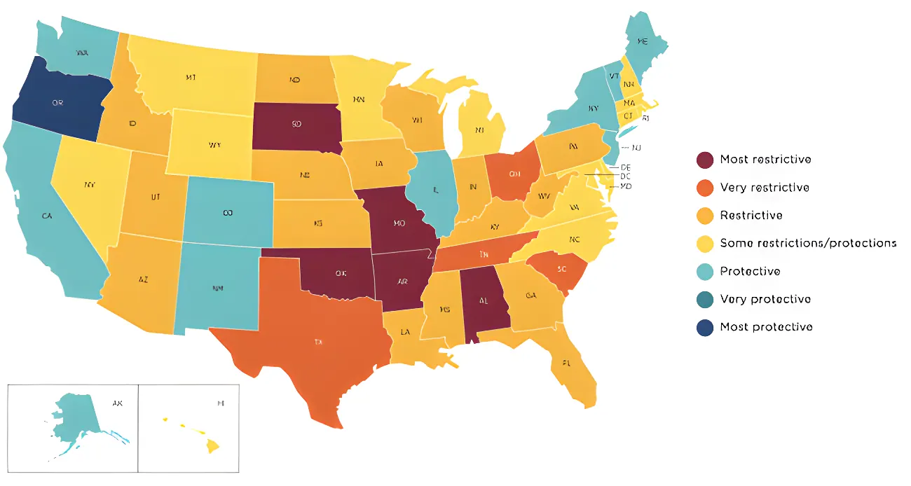

⚖️En juin 2022, la Cour suprême des États-Unis a renversé l'arrêt Roe v. Wade en rendant sa décision dans l'affaire Dobbs v. Jackson Women's Health Organization, mettant fin à un droit fédéral constitutionnel à l'avortement protégé pendant près de cinquante ans. Depuis lors, les États-Unis sont devenus un patchwork de législations radicalement opposées, où le droit à l'avortement dépend désormais du seul lieu de résidence de la femme enceinte. La question reste l'une des plus clivantes de la politique américaine contemporaine.
Avant 1973, l'avortement était illégal dans la quasi-totalité des États américains, sauf pour préserver la vie de la femme enceinte. C'est l'arrêt Roe v. Wade du 22 janvier 1973, rendu à sept voix contre deux, qui a constitutionnalisé pour la première fois le droit à l'avortement. La Cour suprême a établi que le droit à la vie privée garanti par le quatorzième amendement de la Constitution englobait la décision d'une femme d'interrompre ou non sa grossesse. Elle a accompagné ce droit d'un cadre trimestriel : liberté totale au premier trimestre, régulation possible au deuxième, interdiction permise au troisième — une fois le fœtus viable.
En 1992, l'arrêt Planned Parenthood v. Casey a confirmé le principe central de Roe tout en supprimant son cadre trimestriel. La Cour a substitué au trimestre le critère de la viabilité fœtale, et introduit le standard dit de la « contrainte excessive » (undue burden) : un État pouvait réglementer l'avortement, mais non imposer un obstacle substantiel à la femme souhaitant y avoir recours avant la viabilité. Ce cadre a permis aux États de multiplier les restrictions sans pour autant interdire formellement le recours à l'avortement.
Entre 1973 et 2021, les États ont adopté plus de 1 300 lois restrictives concernant l'avortement. En 2021 seul, plus de 600 projets de loi ont été déposés dans les assemblées législatives des États, dont 108 ont été adoptés. C'est dans ce contexte qu'a été soumis à la Cour le cas du Mississippi.
En mai 2021, la Cour suprême a accepté d'examiner une loi du Mississippi de 2018 interdisant la grande majorité des avortements au-delà de la quinzième semaine de grossesse — bien avant la viabilité fœtale, généralement fixée à vingt-trois ou vingt-quatre semaines. Cette saisine était le fruit d'une stratégie délibérée des législateurs anti-avortement du Mississippi, qui avaient adopté la loi en espérant provoquer un recours judiciaire conduisant à la remise en cause de Roe.
En mai 2022, un projet de décision majoritaire rédigé par le juge Samuel Alito a été divulgué à la presse — un événement sans précédent dans l'histoire de la Cour. Le 24 juin 2022, la décision officielle a été rendue à six voix contre trois : la Cour a non seulement validé la loi du Mississippi, mais a renversé à la fois Roe v. Wade et Planned Parenthood v. Casey. Le juge Alito a estimé que la Constitution américaine ne conférait aucun droit à l'avortement, et que ce sujet devait être renvoyé aux législatures des États.
À la suite de la décision Dobbs, les États-Unis se sont rapidement fragmentés en deux blocs opposés. En octobre 2025, selon les données du Milbank Memorial Fund, douze États imposent une interdiction quasi-totale de l'avortement, et six États supplémentaires le limitent à une période de six à douze semaines de grossesse — soit, au total, dix-huit États où l'accès est très fortement restreint, représentant environ un tiers de la population américaine. À l'opposé, neuf États et le District de Columbia autorisent l'avortement sans limite gestationnelle.
Les États du Sud constituent une véritable « désert de l'avortement » : au Texas, en Louisiane, au Mississippi, en Alabama, en Arkansas, dans l'Oklahoma et au Tennessee, l'interruption volontaire de grossesse est interdite dès la conception ou peu après. La Floride, qui avait longtemps fait figure d'exception dans la région, a basculé : après la décision de la Cour suprême d'État en avril 2024, une interdiction à six semaines y est entrée en vigueur.
Roe v. Wade : la Cour suprême constitutionnalise le droit à l'avortement à sept voix contre deux, rendant inconstitutionnelles les lois qui l'interdisent au premier trimestre.
Planned Parenthood v. Casey : Roe est maintenu dans son principe, mais le cadre trimestriel est remplacé par le critère de viabilité fœtale et le standard de la « contrainte excessive ».
Le Texas adopte la loi SB 8, interdisant l'avortement dès la détection d'une activité cardiaque fœtale (environ six semaines). Elle entre en vigueur grâce à un mécanisme d'application civile par des tiers, contournant les recours judiciaires habituels.
Fuite d'un projet de décision de la Cour dans l'affaire Dobbs — événement sans précédent —, révélant que la majorité était prête à renverser Roe.
Dobbs v. Jackson Women's Health Organization : Roe et Casey sont renversés à six voix contre trois. L'avortement n'est plus un droit constitutionnel fédéral. Plusieurs États activent leurs « trigger laws » dans les jours qui suivent.
Dans 10 États, des référendums sur l'avortement sont soumis aux électeurs. Le camp pro-droits remporte 7 États sur 10 (Arizona, Colorado, Maryland, Missouri, Montana, Nevada, New York). Le camp anti-avortement l'emporte au Nebraska, où une limite trimestrielle est inscrite dans la constitution de l'État.
Les batailles judiciaires se poursuivent État par État. Le Missouri, le Wyoming et l'Arizona sont au cœur de contentieux autour de l'application des amendements constitutionnels adoptés par les électeurs. L'administration Trump supprime des directives fédérales protégeant l'accès aux avortements d'urgence.
Les études publiées depuis 2022 mettent en évidence des effets sanitaires préoccupants dans les États restrictifs. Des recherches menées au Texas ont relevé, durant la première année du régime post-six semaines, une hausse de 56 % de la mortalité maternelle globale — et de 95 % chez les femmes blanches — ainsi qu'une augmentation de 50 % des cas de sepsis obstétrical. En 2023, le taux de mortalité maternelle dans les États avec interdiction totale était deux fois plus élevé que dans les États protecteurs.
Dans les États avec des législations restrictives, 40 % des gynécologues-obstétriciens ont signalé de nouvelles contraintes dans leur capacité à prendre en charge les fausses couches et autres urgences obstétricales ; 55 % ont indiqué que leur aptitude à suivre les standards médicaux en vigueur avait été compromise. On observe par ailleurs un exode de médecins et d'internes dans ces États, aggravant des inégalités d'accès aux soins déjà préexistantes. En 2024, environ 155 000 femmes résidant dans des États avec interdiction ont dû se rendre dans un État voisin pour avorter.
Depuis Dobbs, la question de l'avortement n'a pas quitté le cœur de la vie démocratique américaine. Lors des élections intermédiaires de 2022, les mesures pro-avortement ont surperformé les candidats démocrates dans tous les États où elles figuraient sur les bulletins. En 2024, pour la première fois depuis le renversement de Roe, les électeurs du Missouri — un État avec une interdiction quasi-totale — ont voté en faveur d'un amendement constitutionnel étatique protégeant l'avortement jusqu'à la viabilité fœtale. Sur les dix-sept États qui ont organisé un référendum sur l'avortement depuis 2022, quatorze ont vu le camp des droits reproductifs l'emporter. Cette dynamique populaire tranche avec la fragmentation législative en cours : elle signale que le consensus américain sur le droit à l'avortement reste plus large que ne le laissent paraître les positions des législatures d'État et de la Cour suprême.
In June 2022, the U.S. Supreme Court overturned Roe v. Wade in its ruling in Dobbs v. Jackson Women's Health Organization, ending a federal constitutional right to abortion that had stood for nearly fifty years. Since then, the United States has become a patchwork of radically opposing laws, where access to abortion depends entirely on where a woman lives. The issue remains one of the most deeply divisive in contemporary American politics.
Before 1973, abortion was illegal in almost every U.S. state except to save the life of the pregnant woman. It was the ruling in Roe v. Wade on January 22, 1973 — decided seven to two — that first established abortion as a constitutional right. The Supreme Court held that the right to privacy implied by the Fourteenth Amendment's Due Process Clause encompassed a woman's decision to continue or terminate her pregnancy. The Court paired this right with a trimester framework: full freedom in the first trimester, permissible regulation in the second, and allowed bans in the third, once the fetus was viable.
In 1992, Planned Parenthood v. Casey reaffirmed the core principle of Roe while discarding its trimester structure. The Court replaced it with the concept of fetal viability and introduced the "undue burden" standard: a state could regulate abortion, but could not impose a substantial obstacle on a woman seeking to terminate a pre-viability pregnancy. This framework allowed states to layer on restrictions without formally banning abortion outright.
Between 1973 and 2021, states enacted more than 1,300 abortion-restricting laws. In 2021 alone, over 600 bills were introduced in state legislatures, 108 of which passed. It was in this climate that the Mississippi case made its way to the Court.
In May 2021, the Supreme Court agreed to hear a challenge to a 2018 Mississippi law banning most abortions after fifteen weeks of pregnancy — well before fetal viability, generally set at twenty-three to twenty-four weeks. Mississippi lawmakers had deliberately passed the law in the hope that an inevitable legal challenge would allow the Court's newly conservative supermajority to reconsider or overturn Roe.
In May 2022, a draft majority opinion authored by Justice Samuel Alito was leaked to the press — an unprecedented breach of the Court's secrecy. On June 24, 2022, the official decision was handed down six to three: the Court not only upheld the Mississippi law but overturned both Roe v. Wade and Planned Parenthood v. Casey. Justice Alito held that the U.S. Constitution confers no right to abortion, and that the matter must be returned to state legislatures.
Following the Dobbs decision, the United States quickly split into two opposing blocs. As of October 2025, according to data from the Milbank Memorial Fund, twelve states enforce a near-total ban on abortion, and a further six limit it to between six and twelve weeks of pregnancy — meaning eighteen states representing roughly one-third of the U.S. population have implemented highly restrictive abortion policy. At the other end of the spectrum, nine states and the District of Columbia permit abortion with no gestational limit.
The South has become a virtual "abortion desert": in Texas, Louisiana, Mississippi, Alabama, Arkansas, Oklahoma, and Tennessee, abortion is banned from conception or shortly after. Florida, long an exception in the region, shifted position: following an April 2024 decision by the state's Supreme Court, a six-week ban entered into force.
Roe v. Wade: the Supreme Court constitutionalizes the right to abortion seven to two, striking down state laws banning abortion in the first trimester.
Planned Parenthood v. Casey: Roe's core holding is upheld, but the trimester framework is replaced by the fetal viability standard and the "undue burden" test.
Texas enacts SB 8, banning abortion after the detection of fetal cardiac activity (around six weeks). It takes effect using a private civil enforcement mechanism designed to circumvent normal judicial review.
A draft Dobbs opinion is leaked to the press — an unprecedented event — revealing that a majority was prepared to overturn Roe.
Dobbs v. Jackson Women's Health Organization: Roe and Casey are overturned six to three. Abortion is no longer a federal constitutional right. Several states activate their trigger laws within days.
Abortion ballot measures are put to voters in 10 states. The pro-rights side wins in 7 (Arizona, Colorado, Maryland, Missouri, Montana, Nevada, New York). Nebraska voters approve a first-trimester limit to be enshrined in the state constitution.
Legal battles continue state by state. Missouri, Wyoming, and Arizona are at the centre of disputes over enforcing constitutionally-enshrined voter amendments. The Trump administration removes federal guidance protecting access to emergency abortions.
Studies published since 2022 point to concerning health impacts in restrictive states. Research in Texas found, during the first year of the post-six-week ban, a 56% rise in overall maternal mortality — 95% among White women — and a 50% increase in obstetric sepsis cases. By 2023, maternal mortality rates in states with total bans were twice as high as in states where abortion remains protected.
In restrictive states, 40% of OB/GYN practitioners reported new constraints on their ability to care for miscarriages and other obstetric emergencies; 55% reported that their ability to follow established standards of medical practice had been compromised. An exodus of clinicians and medical residents from these states has further deepened existing disparities. In 2024, roughly 155,000 women living in ban states obtained abortions in neighboring states.
Since Dobbs, abortion has not left the heart of American democratic life. In the 2022 midterms, pro-abortion measures outperformed Democratic candidates in every state where they appeared on the ballot. In 2024, for the first time since the overturning of Roe, voters in Missouri — a state with a near-total ban — approved a state constitutional amendment protecting abortion up to fetal viability. Across all seventeen states that have held abortion-related referendums since 2022, the reproductive rights side has prevailed in fourteen. This popular dynamic stands in stark contrast to the ongoing legislative fragmentation: it signals that the American consensus on the right to abortion remains broader than the positions of state legislatures and the Supreme Court might suggest.